Acer SSD Replacement Guide
Step 1
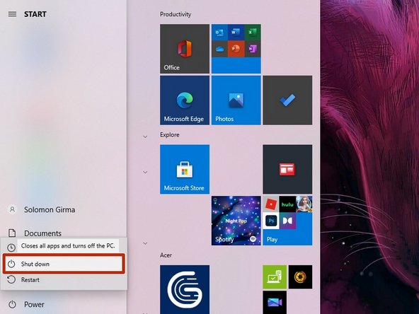
- Shut down your laptop and unplug the battery connection.
- Remove any other device attached to the laptop.
Step 2
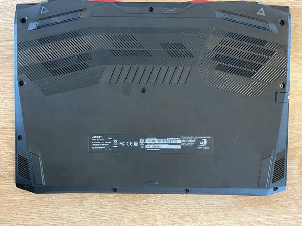
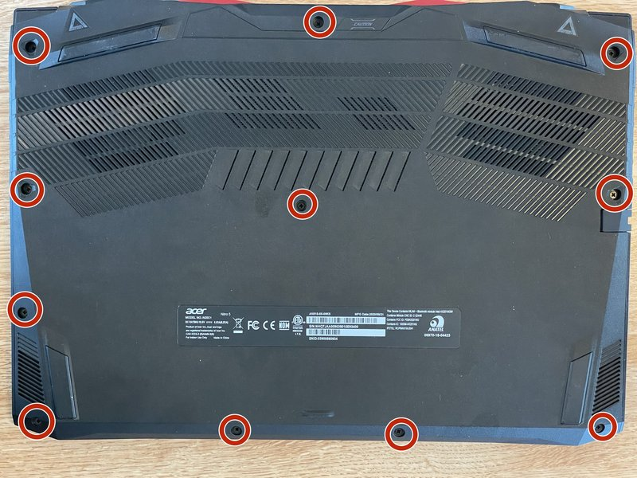
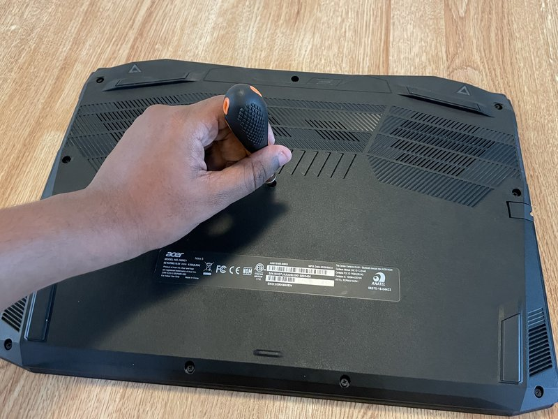
- Flip the laptop over so the bottom is facing up.
- Locate and remove the screws securing the back panel using a Phillips screwdriver.
- Keep track of which screws came from which locations, as they may be different sizes.
Step 3
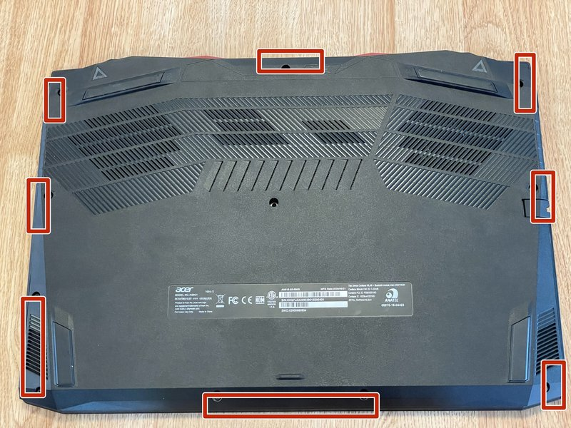
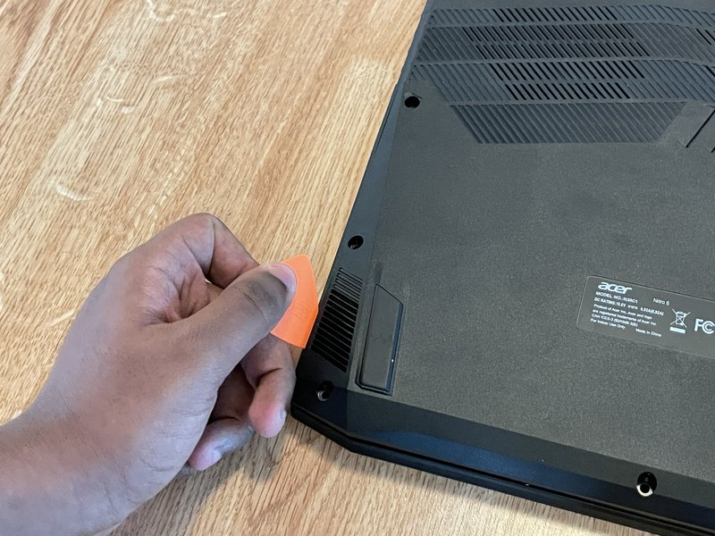
- Carefully pry open the back panel using a plastic opening tool.
- Work your way around the edges to release all clips.
- Remove the back panel completely.
Step 4
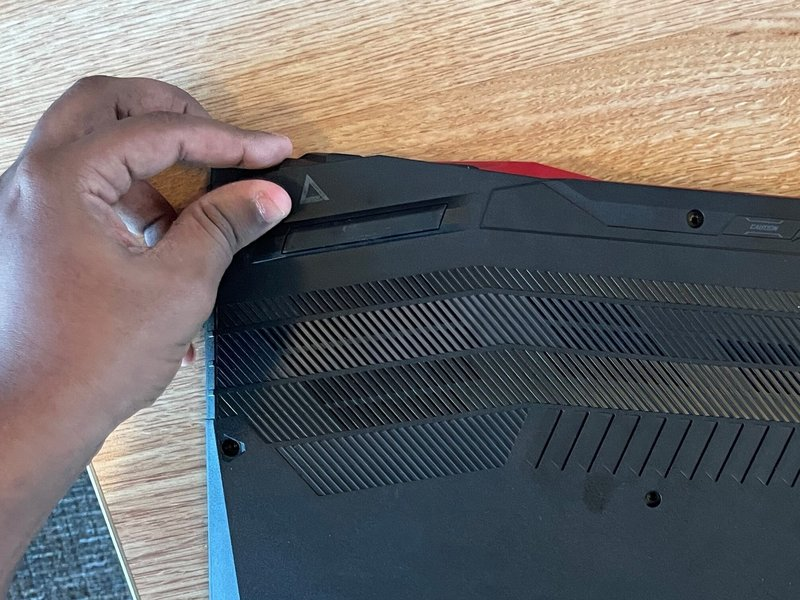
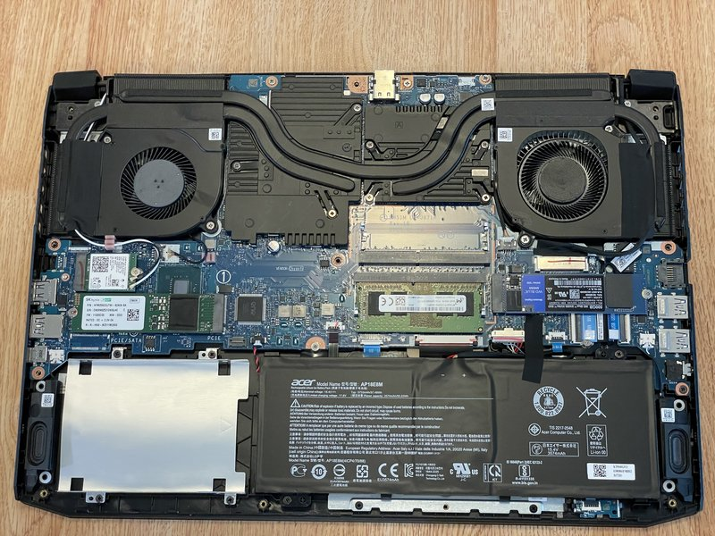
- Locate the SSD in your laptop. It's typically a small rectangular module.
- For M.2 SSDs, look for a small circuit board held down by a single screw.
- For 2.5-inch SSDs, look for a metal or plastic enclosure about the size of a credit card.
Step 5
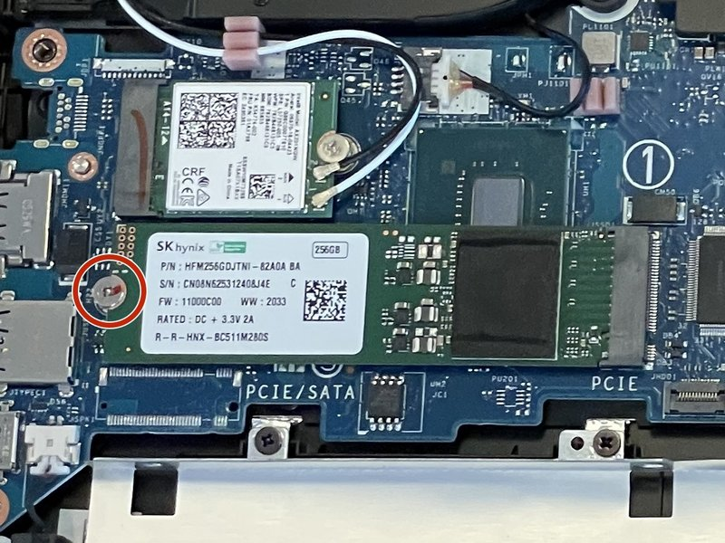
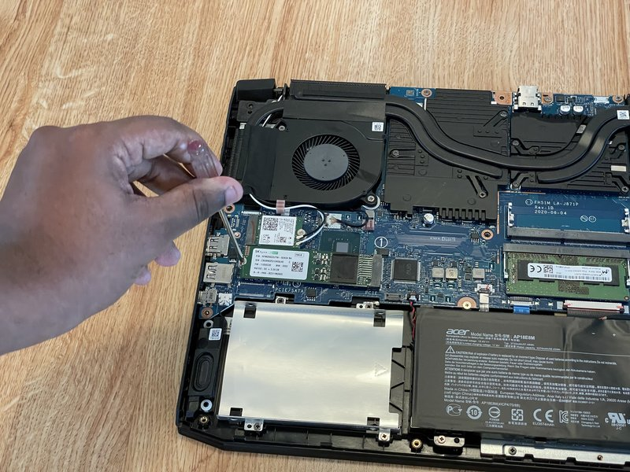
- For M.2 SSDs: Remove the single screw securing the SSD and gently pull it out at a 30-degree angle.
- For 2.5-inch SSDs: Disconnect any cables attached to the SSD and remove the screws securing it to the chassis.
- Set the old SSD aside in an anti-static bag if you plan to keep it.
Step 6
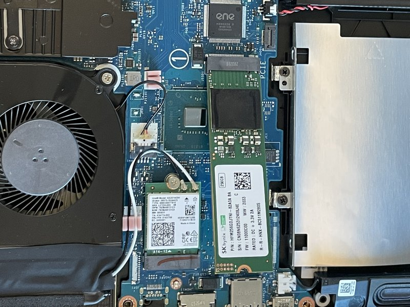
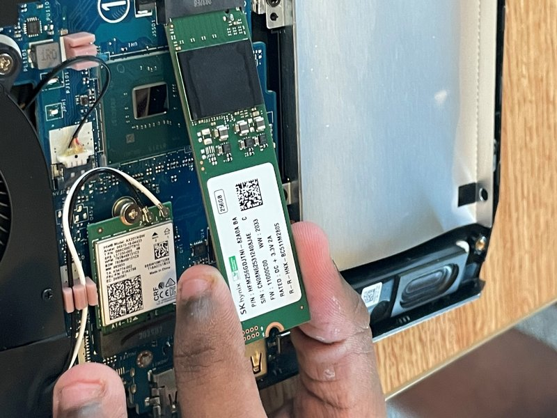
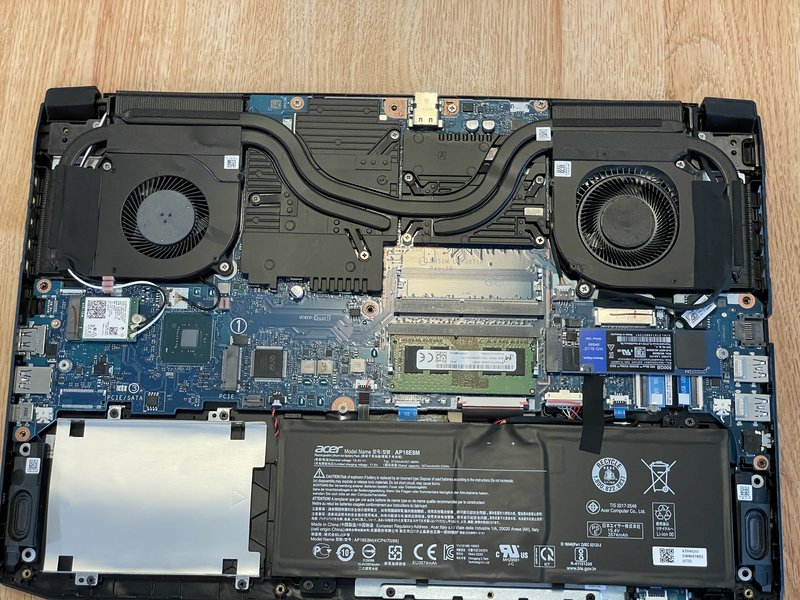
- Take your new SSD out of its packaging, being careful to hold it by the edges.
- For M.2 SSDs: Align the notch on the connector with the slot and insert at a 30-degree angle.
- For 2.5-inch SSDs: Place the SSD in the same position as the old one.
Step 7
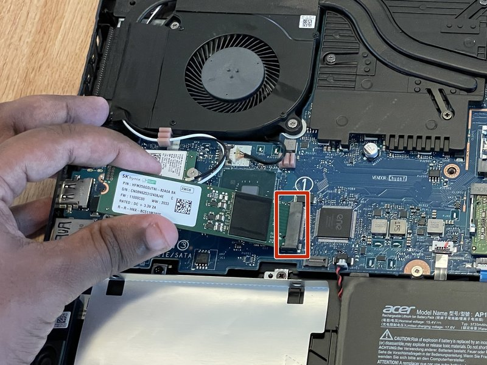
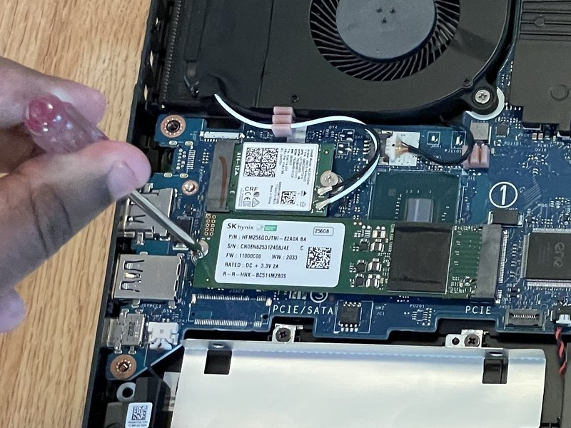
- For M.2 SSDs: Press the SSD down and secure it with the screw you removed earlier.
- For 2.5-inch SSDs: Secure the SSD with the screws you removed and reconnect any cables.
- Ensure the SSD is firmly seated and properly connected.
Step 8
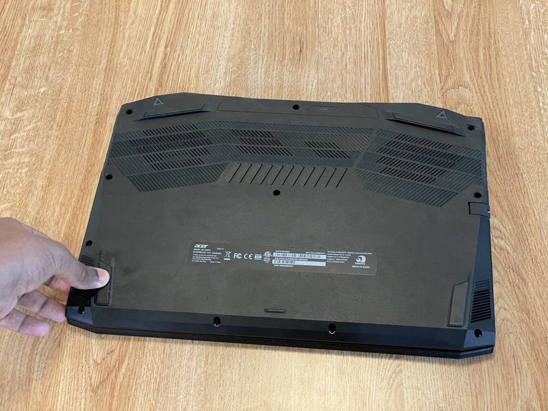
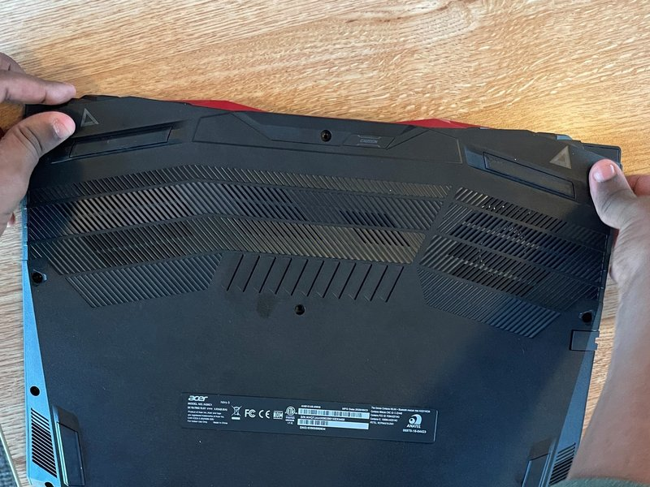
- Replace the back panel of the laptop.
- Secure all screws in their original locations.
- Reconnect the battery and power on the laptop to verify the new SSD is recognized.